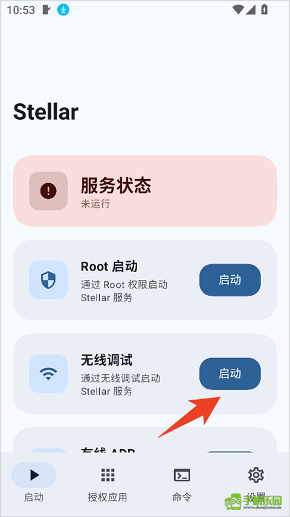
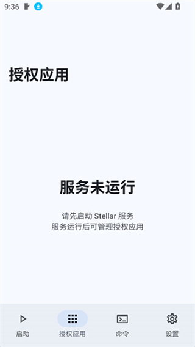

Stellar 是什么？零基础也能跑通的五分钟上手指南
Stellar 是一款让 Android 应用获得更高权限的授权管理器。这篇写给第一次接触它的小白，从下载到跑通，手把手带你走完最短路径。
这篇能带你从完全不懂 Stellar 到用起来——不需要任何刷机、Root 或 ADB 命令的基础，跟着点就行。
它到底是干嘛的？一个生活化类比讲明白
把你的 Android 手机想象成一家公司。平时你用各种 App，就像普通访客在大厅里晃——能用，但很多门你进不去。Stellar 就是公司前台那个帮你拿到门禁卡的人：它自己不大，但它能帮你合法地打开那些默认需要更高权限才能进的门。
具体说，Stellar 是一个授权框架——它用系统自带的调试通道（无线调试或 ADB）给指定的应用颁发临时或永久的授权令牌。拿到令牌的应用就能做一些普通 App 做不了的事，比如后台无障碍、自动化操作、跨应用控制等等。整个过程不需要 Root，也不会动你的系统分区。
为什么要选它？跟同类框架比，Stellar 的官网上写得很清楚——管理器 APK 只有 4~5 MB，界面就四个标签，没有花里胡哨的东西。启动一次服务，好几个应用就能共用，不用每个都单独折腾。
五分钟上手：从下载安装到第一次跑通
整个流程分三步，按顺序点就行。
第一步：装管理器 APK
从Stellar 下载拿到安装包后传到手机上点开安装。系统可能会提示"未知来源应用"，按指引允许这次安装就好，装完之后在系统应用详情里能核对包名 roro.stellar.manager——这个是正版包的唯一标识，体积明显偏大的"整合包"别碰。

第二步：打开开发者选项和无线调试
这步在系统设置里完成，跟 Stellar 本身没关系：
- 进「设置 → 关于手机」
- 连续点 5 到 7 次「版本号」，系统会弹个小提示说已经进入开发者模式
- 回到设置，搜一下「开发者选项」就找到了（不同品牌藏的位置不一样，直接搜最快）
- 进去找到「无线调试」把它打开——注意是「无线调试」这一项，不是「USB 调试」
别担心找不到入口，实在摸不着，设置页顶部那个搜索框就是你的好朋友。已经开过开发者模式的手机可以跳过第二步连点，直接搜。
第三步：回到管理器启动服务
打开 Stellar，底部四个标签分别是启动、授权应用、命令、设置。你第一眼会看到服务状态卡片——如果是红的、写着"未运行"，点一下上面的启动按钮，按屏幕提示完成无线调试配对和启动。通了之后状态会变成绿色的"正在运行"，这就跑通了。
上手后先玩这三个功能
服务一旦跑起来，这三个地方是你最先会用到、也最容易感知价值的：
服务状态卡片
就在启动页最显眼的位置。绿的就是活着，红的就是断了——就这么简单。新手最常遇到的问题就是服务悄悄掉了，扫一眼这个卡片就知道，不用到处点排查。
授权应用页
切换到第二个标签，你会看到手机上所有已安装的应用列表。找到你想要授权的那个，点开一看，里面会显示授权类型（永久还是一次性）、当前状态、撤销按钮。打个勾就授权了，下次打开那个应用，它就能正常调用 Stellar 了。
命令页
第三个标签是终端命令区。应用里有很多操作支持一键生成命令然后复制执行，你不用自己写命令，也不用开电脑 ADB——复制粘贴，回车就行。更详细的命令用法可以翻一下Stellar 文档。这对老机型特别有用，后面会提到。
小白的三个常见疑问
重启后所有应用都提示未授权怎么办？
别慌，这是正常现象，不是坏了。Android 系统重启会自动断开调试通道，Stellar 的服务自然跟着停了。恢复很简单：打开管理器 → 看一眼服务状态是不是红的 → 点一次启动。无线调试通道重新拉起，几秒的事，之前授权过的应用不用重新打勾，记录还在。

如果某一个应用在服务恢复之后还喊"没权限"，先查它是不是拿的一次性授权——一次性的会在服务断开时自动归零。不是的话，看看它的授权状态是不是被改成了"询问"或者"拒绝"。
找不到无线调试的开关？
不同品牌手机路径差异挺大：有的藏在「系统与更新」，有的在「更多设置」里面。最靠谱的办法是直接在设置页顶部的搜索框里搜"无线调试"或者"开发者选项"。搜索比翻菜单快十倍。
如果已经试过了还是找不到，有一种可能是你的系统版本太老——无线调试是 Android 11 才有的功能。更老的机型也能用 Stellar，但要走有线 ADB 启动，得连一次电脑，在电脑上执行一条命令把服务拉起来。命令管理器里有现成的，复制就行，不用手敲。
国产定制系统会不会有问题？
部分国产系统（比如 MIUI、ColorOS、OneUI）对后台拉起服务限制比较严。建议装完顺手在系统设置里允许 Stellar 自启动和后台运行。不同品牌的具体路径不一样，搜一下"自启动"就能找到。允许之后重启手机，Stellar 就能跟着开机自动把服务拉起来，不用每次手动点。
玩进去之后
跑通之后的进阶方向主要有两个：如果你愿意 Root，Stellar 会更稳、更省心，服务不容易掉；如果不想 Root，开机自启配合无线调试就是大多数人的选择——Android 11 以上的机器都支持，配好之后基本不用再管。
就这些，五分钟就能走完整个流程。打开应用，跟着点，不行就退回来再来一次——Stellar 的设计就是让普通人也能拿到那把门禁卡。